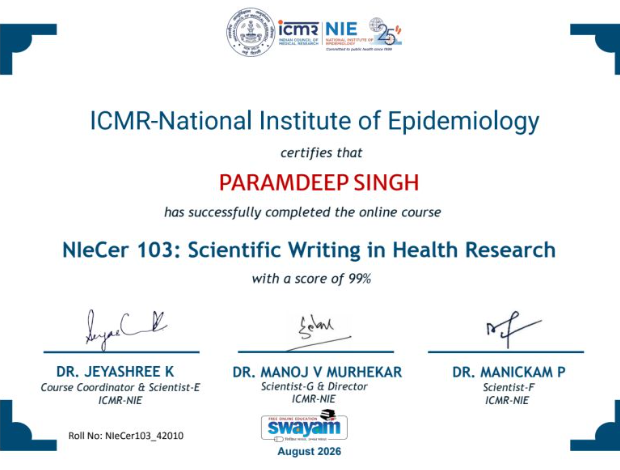
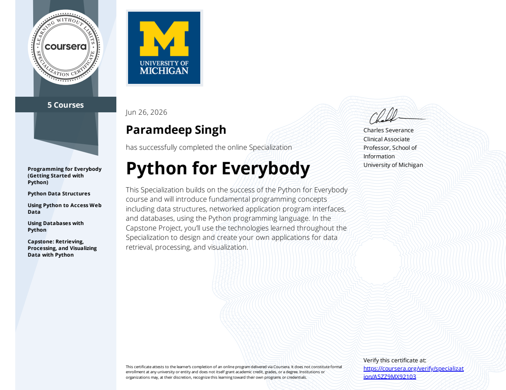
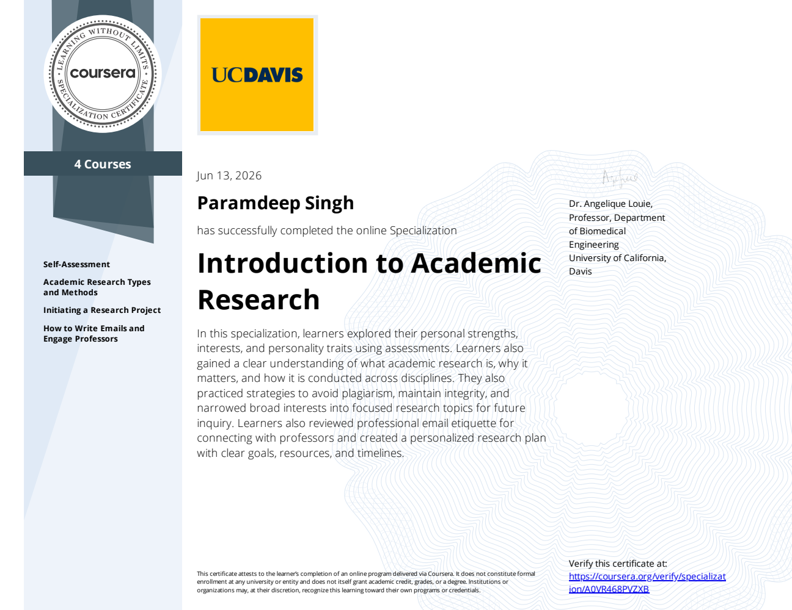
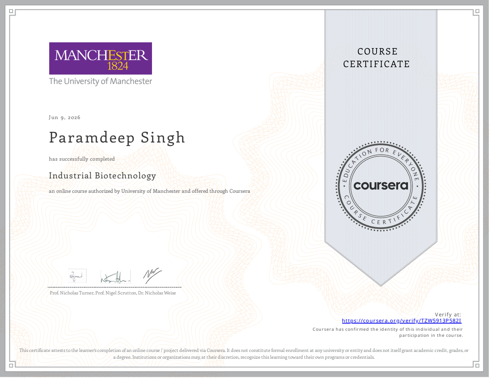
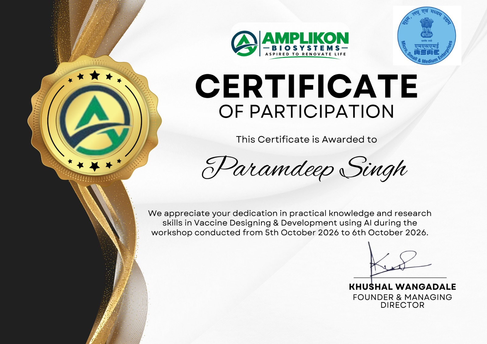
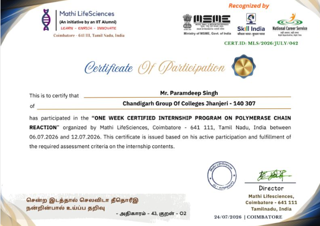
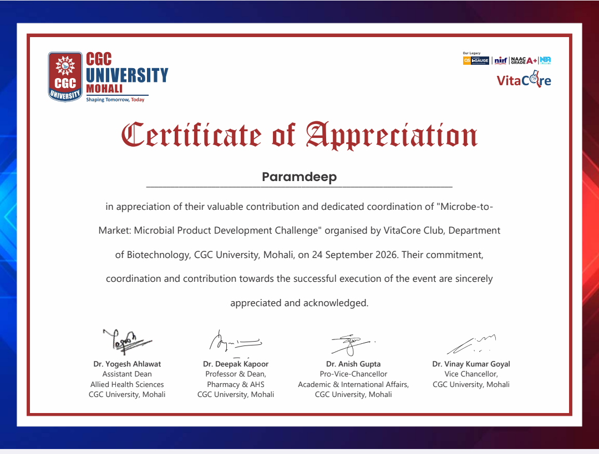
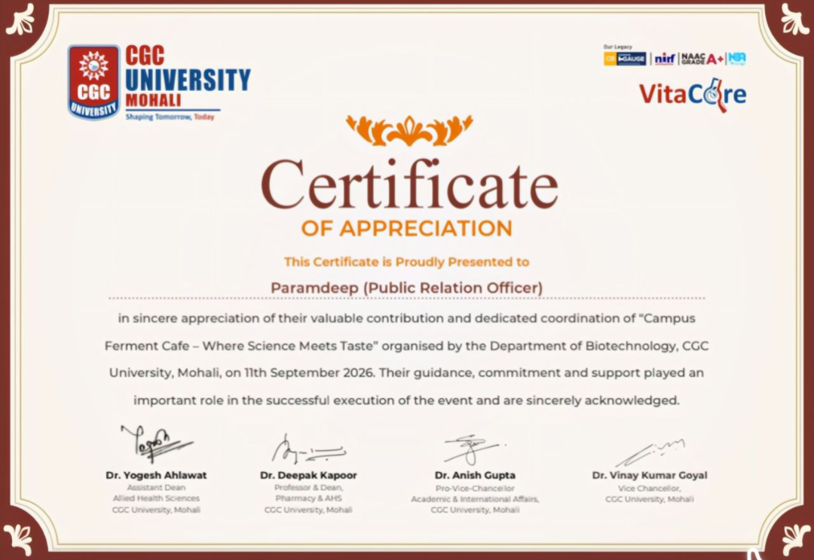

2025 – 2028
B.Sc. Biotechnology
Chandigarh Group of Colleges (CGC University), Jhanjeri, Mohali
I.K. Gujral Punjab Technical University, JalandharSGPA (Semester 1): 9.47
I’m Paramdeep Singh, a B.Sc. Biotechnology student developing practical capability across molecular biology, bioinformatics, computational biology and biotechnology R&D.
I am a biotechnology undergraduate with a balanced interest in wet-lab biology and computational analysis. My current work spans PCR principles, extraction and fermentation alongside Python-based bioinformatics, BLAST-driven comparative genomics and sequence analysis.
I’m particularly interested in opportunities where biological questions can be approached with rigorous experimentation, computational tools and clear scientific communication.
My goal is to keep strengthening both laboratory and computational expertise while contributing to molecular biology, microbiology, genomics, bioinformatics and biotechnology R&D.
Chandigarh Group of Colleges (CGC University), Jhanjeri, Mohali
I.K. Gujral Punjab Technical University, JalandharPunjab School Education Board (PSEB)
Physics, Chemistry, BiologyPCR principles, DNA amplification, extraction workflows and molecular biology foundations.
Microbial systems, fermentation technology, botanical extraction and biotechnology R&D.
Sequence analysis, BLAST, comparative genomics, Biopython and genome feature analysis.
Scientific writing, research methodology, literature-based work and scientific presentation.
Python-based biological data analysis, pairwise alignment, FASTA/GenBank handling and in-silico workflows.
Building exposure to AI-assisted approaches in areas such as vaccine design and biological research.
Compared E. coli O157:H7 Sakai and E. coli 55989 to identify genomic differences associated with pathogenicity. Used whole-genome BLAST, genome-wide dot-plot analysis, circular genome comparison, and GenBank feature/annotation analysis to examine strain-specific virulence content and Shiga-toxin-associated regions.
Built a web-based DNA analysis application covering GC content, nucleotide composition, reverse complement, transcription, translation and mutation generation. Integrated FASTA upload, sequence comparison, pairwise alignment and restriction enzyme analysis, with visualisations and automated reporting.
Formulated a plant-based antifungal spray combining neem (azadirachtin) and clove (eugenol). Performed aqueous extraction, clove-water preparation and colour extraction, and presented the work at Biotech Blooms Mini Project Day.
Developed and presented Micromend as a microbial product concept during microbe to market challenge organized by Vitacore Club . The project involves applying Biotechnology concepts towards the development of a practical microbial product solution and presenting the concept in a competitive scientific settings.
Developed a multi-module hospital management system with secure Email OTP login, patient registration, doctor management, appointment scheduling, billing and PDF invoice generation. Built an interactive dashboard for patient, doctor, appointment and billing data.
A focused record of conference participation, poster contribution and scientific presentation.
Contributed to the development and presentation of a scientific poster examining the role of bioinformatics, molecular diagnostics and AI integration in precision medicine.
Participated in the national conference hosted by Dr. C. V. Raman University, gaining exposure to current work on fungi and sustainable development.

ICMR-National Institute of Epidemiology · SWAYAM
Score: 99%
University of Michigan · Coursera
5-course specialization
University of California, Davis · Coursera
4-course specialization
University of Manchester · Coursera
Course certificate
Amplikon Biosystems
Certificate of Participation · Two-day workshop
Mathi LifeSciences
One-week programme
VitaCore Club · CGC University
Appreciation for coordinating the Microbe-to-Market: Microbial Product Development Challenge
VitaCore Club · CGC University
Appreciation for coordinating Campus Ferment Cafe: Where Science Meets TastePresented the project MicroMend in a microbial product development challenge organised by VitaCore Club, CGC University.
Attended the World Fungus Day conference hosted by Dr. C. V. Raman University, gaining exposure to current work on fungi and sustainable development.
Observed a professional biomedical research environment and the role of advanced facilities in life-science research.
Presented BioNeemix and practised scientific presentation and project demonstration.
Participated in a workshop on fermentation technology and its industrial applications.
Developed problem-solving and pitching skills while exploring biotechnology-driven solutions.
Explored perspectives on careers in the biological and medical sciences at Open Lab.
Co-developed a fermented beetroot barfi through a three-day fermentation process, gaining practical exposure to fermentation-based food processing and product development.
Recognised for securing a place in the top 0.1% of students statewide.
I’m open to conversations around life-science internships, research opportunities, higher-study pathways, scientific collaboration and biotechnology R&D.